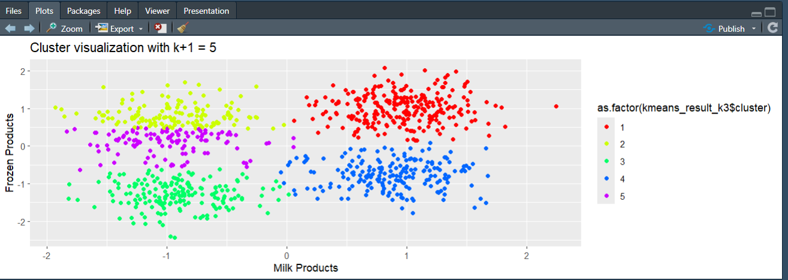
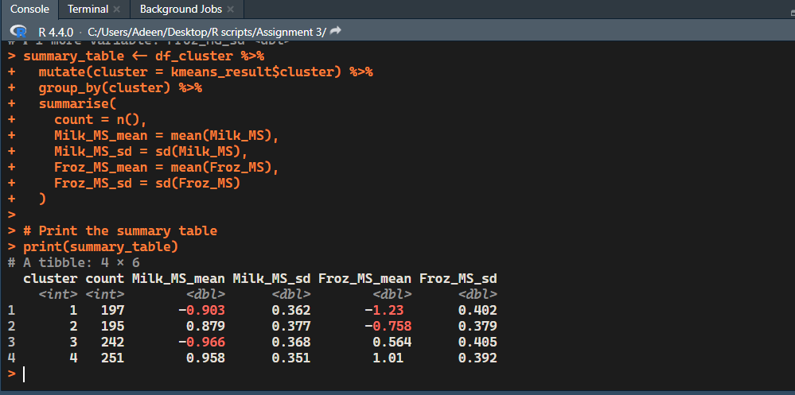
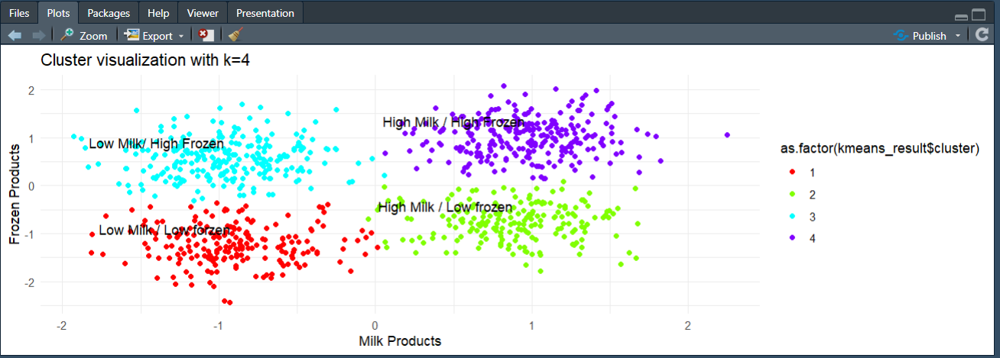

Milk and Frozen Spending Clusters
Author: Mohammed Adeen Shaik
Review date: 11 October 2026
Research question
Can standardized milk and frozen spending reveal interpretable descriptive customer groups?
Data and provenance
Coursework R script and original Clustering Documentation.docx; Dataset.txt is absent.
Source materials are linked from the repository README. Input fingerprints are recorded in the evidence manifest so a reader can identify the exact committed artifacts used in this review.
Method and analytical rationale
The script standardizes numeric fields, inspects within-cluster sum of squares for k=2 through 7 and compares k=3, 4 and 5. The coursework selected four clusters for interpretability.
Findings and interpretation
The original report selected four milk/frozen spending clusters after inspecting k=3, 4 and 5. This is a documented interpretability choice. The source Dataset.txt is missing, so no refreshed inertia, silhouette score or customer counts are claimed.
Limitations
Four clusters are a coursework choice, not proof of an optimal population segmentation. Cluster numbering is arbitrary; names must be derived from fitted centers. No new metrics can be reproduced without the original data.
Reproduction
Use the setup commands and input contract in the repository README. Open the notebook catalogue for annotated code and saved outputs. Keep raw records and model binaries local; public reports contain aggregate results or source-embedded figures.
Final visual results

Historical figure image17.png from Clustering Documentation.docx; not a refreshed experiment.

Historical figure image18.png from Clustering Documentation.docx; not a refreshed experiment.

Historical figure image19.png from Clustering Documentation.docx; not a refreshed experiment.